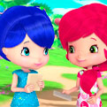
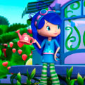

¡Hola! Bienvenidos a mi página, yo soy Morita, amiga de Rosita Fresita. Juntas vivimos en Ciudad Tutti Frutti. Yo amo leer libros, trabajar en la biblioteca y cuidar mi jardín. ¡Mirá mi episodio favorito!
Sobre mi
Me encanta leer sobre todo tipo de cosas. Soy muy responsable y organizada.
Puedo ayudarte en cualquier duda que tengas sobre algún tema o puedo decirte en que libro podés encontrar las respuestas.
Las cosas que mas me divierten son:
- Leerles y cuidar a los Berrykins
- Encontrar un libro nuevo
- Pasar tiempo con mis amigas
- Ir al café de Rosita Fresita
Como soy
Me considero bastante inteligente, se cosas que nadie mas de la ciudad sabe ya que leo mucho. Tengo muy buena memoria y siempre me acuerdo en que libro leí cada cosa.
Soy muy cariñosa con mis amigas Rosita Fresita, Naranjita y Dulce de Limón. Amo pasar tiempo con ellas. Siempre trata de mantener a mis amigas en la realidad y de enseñarles lo que no saben.
 